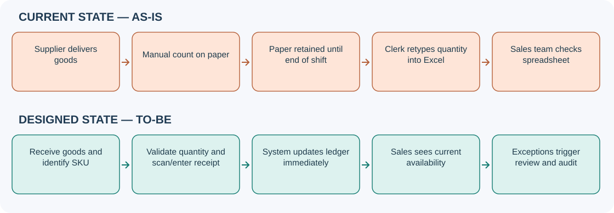

Business problem
Goods were counted on arrival, written on paper and only entered into Excel at the end of a shift. Sales teams relied on potentially outdated availability figures, while missed entries and manual retyping created reconciliation risks.
Scope and objective
Business objective: Make stock movement visible at the point of work, preserve an auditable history, and provide sales with a current availability view.
Included: A single-warehouse workflow for goods receipts, stock issues, controlled adjustments, minimum-stock alerts, role permissions, stock reports and audit trails.
Not included: Supplier invoicing, accounting integration, multi-warehouse transfers, purchasing automation, mobile barcode device procurement and a working production application.
Process analysis
Current-state (AS-IS) versus designed future-state (TO-BE) workflow from the completed case-study documents.

Selected functional requirements
| ID | Capability | Priority |
|---|---|---|
| INV-FR-01 | Receipt capture | Must |
| INV-FR-02 | Receipt validation | Must |
| INV-FR-03 | Stock issue | Must |
| INV-FR-04 | Inventory ledger | Must |
| INV-FR-05 | Stock alert | Should |
| INV-FR-06 | Adjustment approval | Must |
BA evidence and work products
Completed a linked BA requirements and validation package: charter/BRD, FR and NFR specification, AS-IS and TO-BE diagrams, GAP analysis, six user stories, acceptance criteria, traceability matrix, UAT test scenarios and KPI definitions.
Measurement framework
- Inventory accuracy rate: 1 - (absolute quantity discrepancies across counted SKUs / physical units counted); report as % (Illustrative pilot target: 98% or higher; design-stage objective)
- Update latency: Median time between physical receipt confirmation and visible system balance (Pilot objective: within 1 minute; design-stage objective)
- Unapproved adjustment count: Adjustments posted without authorisation (Control objective: zero; design-stage objective)
Risks and business rules
- The same receipt reference cannot be posted twice for the same supplier and SKU without exception approval.
- Available stock must not become negative as a result of a standard issue transaction.
- Only a supervisor can approve a quantity adjustment; an approver cannot alter the posting audit history.
- Low-stock status is evaluated after a successfully committed movement.